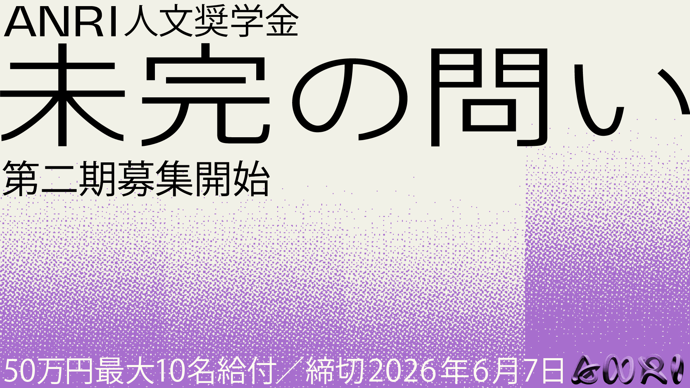
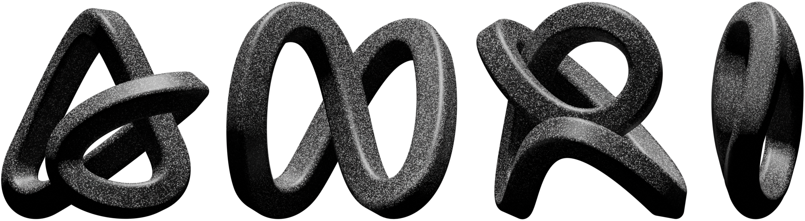

第2期（2026–2027年度）募集要項 2nd Cohort (2026–2027) Call for Applications 第二期（2026–2027年度）募集简章
ベンチャーキャピタル（VC）であるANRIは、「圧倒的な未来（Beyond Future）」をビジョンとして掲げ、技術革新や社会変革を目指す企業に投資を行ってきました。その実現のために、基礎科学研究のための給付型奨学金「The ANRI Fellowship」を7年前から開始し、理工系の基礎科学研究者の支援を微力ながらさせていただいております。
そのような支援をしていくなかで、昨今のテクノロジーが急速に進展する現代においてこそ、技術への投資と同時に「人間や社会に対する理解」を深化させることが不可欠であると業務を通じて実感するようになりました。
その観点から、人文系の研究は、社会をより良い方向へ導き未来を拓く重要な鍵を握っている可能性があると考え、従来の基礎科学研究のための奨学金だけでなく人文系研究のための奨学金も始めていく必要があると思い、この奨学金の募集を発表するに至りました。ANRI人文奨学金では、人文系研究がもたらす具体的な社会的インパクトを重視し、新たな視点から未来を考える／切り拓く問いを生む気概がある若手研究者を支援していきたいと考えております。
ANRI is a venture capital firm with the vison "Beyond Future," investing in companies driving technological innovation and social transformation. For seven years, we have supported basic science researchers through the ANRI Fellowship grant program.
Through these efforts, we have come to realize that in an era of rapid technological progress, deepening our understanding of humanity and society alongside technology investment is indispensable.
From this perspective, we believe humanities research holds the key to guiding society toward a better future. The ANRI Humanities Fellowship places emphasis on the concrete social impact of humanities research and supports young researchers who have the spirit to generate bold new questions about the future.
ANRI是一家以"压倒性的未来（Beyond Future）"为使命的风险投资公司，一直致力于投资推动技术创新和社会变革的企业。七年前，我们设立了给付型奖学金"The ANRI Fellowship"，支持理工科基础科学研究者。
在此过程中，我们深刻感受到，在技术飞速发展的当今时代，在投资技术的同时深化对"人类与社会的理解"不可或缺。
基于此，我们认为人文研究有可能成为引领社会走向更好未来的关键。ANRI人文奖学金重视人文研究带来的具体社会影响，支持有志于从全新视角思考和开拓未来的年轻研究者。
ANRI人文奨学金の第2期を始めるにあたって、改めて、なぜベンチャーキャピタルであるANRIが人文知に対する奨学金を行っているのかを書いておきたい。
ビジネスの基本は課題解決だと言われる。問いを「解くべき課題」に変換し、答えを出していく営みだ。理工系の学問に注目が集まるのも、この「問いと解決」のサイクルを回せるからだろう。ANRIが別途行っている基礎科学の奨学金「未解の知」も、まだ誰も踏み込んでいない領域に立ち向かう研究者を支援するものであり、それは非常に大事なことだ。
一方で、人文知の力はもっと手前にある。答えを出すことではなく、問い自体を生むことにあるのではないかと思っている。人間や社会と向き合うとき、たった一つの正解があるわけではない。時代によって解釈は変わり、永遠に「解けた」とは言えない問いがある。そういう問いを考え続けられること——それが人文知の、何ものにも代えがたい役割なのだと個人的には捉えている。
第1期の募集に向けて、自分はこう書いた。1期を終えた今、この考えはより強くなった。
"いつか、何かの形で社会に還元されるかもしれないし、あるいはまったく実用化されないかもしれない。それでも、"問いを消さない"ことの大切さは、この資本主義と効率化が猛スピードで回る世界では、ますます貴重になるのではないかと思う。"
だから第2期から「未完の問い」というものをタグラインに掲げたい。人間や社会には、完結した答えなどない。常に未完であり、だからこそ問い続ける価値がある。その未完の問いに向き合い続ける研究者を支援することで、問いを絶やさない世界をつくっていきたい。
私たちANRIは「圧倒的未来」の実現を掲げている。けれど圧倒的未来とは何か、社内で話してもひとりひとり答えが違う。それでいいのだと今は思う。世界情勢が揺れ動く今だからこそ、「これだけが正しい」というものではなく、多様な問いを持つことこそが、圧倒的未来をつくることにつながる——1期を通じて、そう確信した。
今回も、気概ある研究者を支援できることを心から楽しみにしている。
As we launch the second cohort of the ANRI Humanities Fellowship, I want to revisit why ANRI — a venture capital firm — supports humanities scholarship.
Business is often said to be about solving problems: converting questions into actionable challenges and working toward answers. The spotlight on science and engineering makes sense precisely because they drive this "question-to-solution" cycle. ANRI's separate basic science fellowship, "Unexplored Knowledge," supports researchers venturing into territories no one has yet explored — and that work is enormously important.
But the power of humanities knowledge lies somewhere upstream. I believe it lies not in providing answers, but in generating the questions themselves. When we engage with human beings and society, there is no single correct answer. Interpretations shift with the times, and some questions can never truly be "solved." The ability to keep thinking about such questions — that, I believe, is the irreplaceable role of the humanities.
When preparing for the first cohort, I wrote the following. Having completed that cohort, this conviction has only grown stronger.
"Someday, it may be returned to society in some form — or perhaps never put to practical use at all. Even so, in this world where capitalism and efficiency spin at breakneck speed, the importance of 'not letting questions die' seems ever more precious."
That is why, starting with the second cohort, I want to adopt "The Unfinished Question" as our tagline. There are no complete answers when it comes to humanity and society. These questions are always unfinished — and that is precisely why they are worth pursuing. By supporting researchers who continue to face these unfinished questions, we hope to build a world where questions are never extinguished.
We at ANRI hold up the realization of an "awesome future." But what an awesome future actually looks like — even within our own team, everyone has a different answer. I now think that's perfectly fine. In a world where global circumstances are in flux, it is not "this one thing is right" but rather holding diverse questions that leads to an awesome future — this is what I came to firmly believe through the first cohort.
I am truly looking forward to supporting more passionate researchers this time as well.
在启动ANRI人文奖学金第二期之际，我想再次阐明，为何作为风险投资公司的ANRI要为人文知识设立奖学金。
商业的本质，常被认为是解决问题：将疑问转化为"待解课题"，并逐步给出答案。理工科之所以备受关注，正是因为它能驱动这一"问题与解决"的循环。ANRI另设的基础科学奖学金"未解之知"，同样是支持那些勇于探索无人涉足领域的研究者——这极为重要。
而人文知识的力量，则存在于更前端之处。我认为，它不在于给出答案，而在于生发出问题本身。面对人类与社会时，并不存在唯一的正解。解读随时代变迁，有些问题永远无法被"解决"。能够持续思考这样的问题——这，在我看来，正是人文知识无可替代的价值所在。
在筹备第一期招募时，我曾写下这样的话。如今第一期结束，这一想法愈发坚定。
"也许有一天，它会以某种形式回馈社会；也许永远不会被实用化。即便如此，在这个资本主义与效率化高速运转的世界里，'不让问题熄灭'的重要性，恐怕会愈发珍贵。"
因此，从第二期起，我想将"未竟之问"作为我们的标语。面对人类与社会，没有完结的答案。问题始终未竟，正因如此，才值得不断追问。通过支持那些持续直面未竟之问的研究者，我们希望共同构建一个让问题永不熄灭的世界。
我们ANRI以实现"压倒性未来"为目标。然而，何为压倒性未来——即便在内部讨论，每个人的答案也各不相同。我如今认为，这正是应有之义。在当今世界局势动荡之际，不是"唯此为正确"，而是持有多元的问题本身，才能通向压倒性未来——这是我在第一期结束后深切确信的。
此次，我衷心期待能够再次支持那些满怀志气的研究者。
以下の応募フォーム（Googleフォーム）より必要事項をご記入のうえ、ご応募ください。
Please submit your application via the Google Form linked below.
请通过以下Google表单提交申请。
応募締切：2026年6月7日（日）23:59（日本時間）
Deadline: June 7, 2026 (Sun) 23:59 JST
截止日期：2026年6月7日（周日）23:59（日本时间）
採択者同士や奨学金関係者との交流を深める機会として、交流会を実施いたします。各採択者には、自身の研究について10分程度のプレゼンを行なっていただきます。
Networking events are held for fellows and stakeholders. Each fellow presents ~10 minutes on their research.
为加深录取者之间及与奖学金相关人士的交流，将举办交流会。每位录取者须就自身研究进行约10分钟的报告。
ANRIの媒体（ポッドキャストやweb記事、ZINEなど）を通して、研究成果を発信していただきます。
Fellows share findings through ANRI media (podcasts, web articles, zines, etc.).
通过ANRI媒体渠道（播客、网络文章、ZINE等）发布研究成果。
当奨学金の広報や報告を目的として、採択者の氏名・所属・研究テーマ等を公表させていただく場合があります。
成果の要旨や概要などをメディアに掲載する場合は、事前に採択者と協議のうえ実施します。
For publicity and reporting purposes, we may publish fellows' names, affiliations, and research topics.
Any publication of research summaries will be done in consultation with the fellow.
出于宣传和报告目的，可能会公布录取者的姓名、所属机构和研究主题。
如需在媒体上刊登研究摘要，将事先与录取者协商后进行。
2025年度の第1期では、採択フェローによるポッドキャスト配信やZINE制作など、多様なアウトリーチ活動を行いました。
In the 1st cohort (2025), selected fellows engaged in various outreach activities including podcast episodes and ZINE production.
在2025年度的第一期中，录取的研究者开展了播客节目和ZINE制作等多种宣传活动。
ご質問・ご不明な点がございましたら、下記までご連絡ください。 If you have any questions, please contact us at: 如有疑问，请通过以下方式联系：
Email：humanities-staff@anri.vc